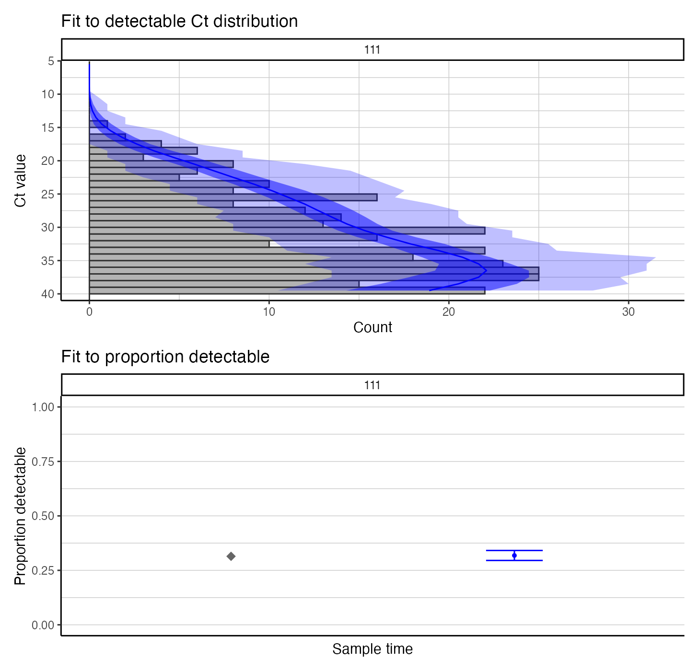
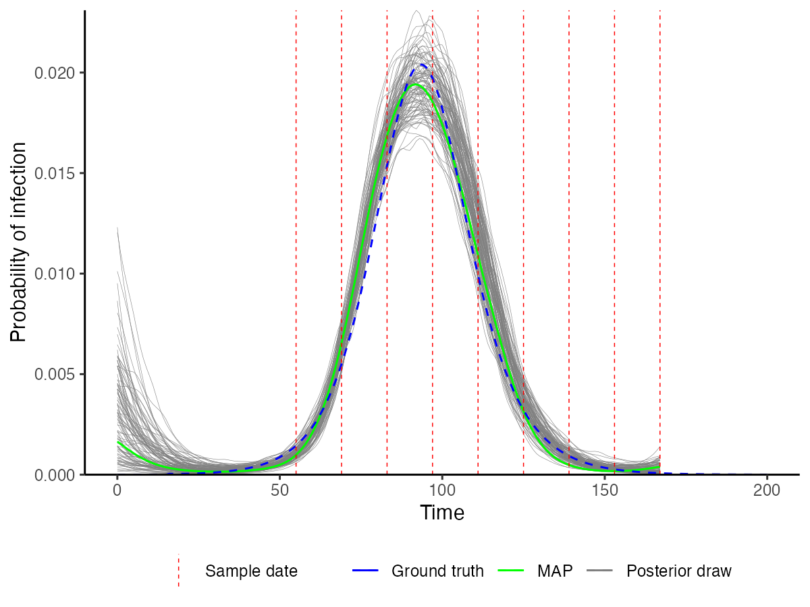

virosolver vignette – simulated data
vignette.RmdThis vignette exhaustively steps through the code, model checks and fitting prodecure to use virosolver to estimate incidence curves from simulated data. This code can be adapted for your own datasets by replacing the Ct data frame, here called example_ct_data. Note that for your own datasets, substantial callibration and checks are advised.
library(virosolver)
library(tidyverse)
library(patchwork)
library(lazymcmc)
library(foreach)
library(doParallel)
cl <- parallel::makeCluster(4, setup_strategy = "sequential")
registerDoParallel(cl)1. Rationale
virosolver takes an input data frame of cycle threshold (Ct) values with associated sample collection dates from quantitative reverse transcription PCR (RT-qPCR) testing, and reconstructs the incidence curve that gave rise to those measurements. The logic is as follows:
- There is an unobserved incidence curve that describes the generation of new infections over time;
- Susceptible individuals may become infected at some point in time with probability equal to the per-capita incidence on each day;
- Following infection, viral loads in the infected individual follow some set of predictable kinetics (ie. viral loads go up then down);
- Individuals are sampled at random from the population (a random cross-sectional sample), and thus an individual’s viral load is measured at some unknown point (as a Ct value) in their infection course;
- If we mostly measure low viral loads, then most of the individuals we sampled were in the late stage of their infection and incidence was likely declining, but if we mostly measure high viral loads, then most individuals were early on in their infection course and incidence was likely growing.
By capturing this logic in a mathematical model, we can obtain a probabilistic estimate of the underlying incidence curve having observed a set of Ct values at some point in time.
To summarize, the key idea is that you can estimate incidence based on cross-sections of observed Ct values. This case study explores the application of virosolver to SARS-CoV-2 surveillance. A full explanation can be found in the accompanying paper.
2. Data
virosolver expects a data frame as input data in long format, where each row corresponds to one tested sample. There should be one column labeled t, giving the time in days a sample was taken, and one column labeled ct, giving the Ct value of that tested sample. Note that Ct values are semi-quantitative and their scale depends on the platform/instrument used. It is assumed that all Ct values within the data frame are on the same scale and therefore internally consistent across time points. For this simulation, we assume that 1000 random samples are obtained every 2 weeks, starting from day 55.
data(example_ct_data)
print(head(example_ct_data %>% filter(ct < 40)))
## # A tibble: 6 x 2
## t ct
## <int> <dbl>
## 1 55 29.9
## 2 55 18.9
## 3 55 28.0
## 4 55 31.0
## 5 55 33.6
## 6 69 38.3
## Plot only detectable Ct values
p_ct_data <- ggplot(example_ct_data %>% filter(ct < 40)) +
geom_violin(aes(x=t,group=t,y=ct),scale="width",fill="grey70",draw_quantiles=c(0.025,0.5,0.975)) +
geom_jitter(aes(x=t,y=ct),size=0.1,width=2,height=0) +
scale_y_continuous(trans="reverse") +
theme_bw() +
ylab("Ct value") +
xlab("Observation time") +
ggtitle("Observed Ct values < 40 (the limit of detection) over time")
p_ct_data
p_detectable_data <- example_ct_data %>%
mutate(detect=ct < 40) %>%
group_by(t) %>%
summarize(prev=sum(detect)/n()) %>%
ggplot() + geom_point(aes(x=t,y=prev)) +
theme_bw() +
scale_y_continuous(limits=c(0,0.6)) +
ylab("Proportion detectable") +
ggtitle("Proportion of samples with Ct values < 40") +
xlab("Observation time")
## `summarise()` ungrouping output (override with `.groups` argument)
p_detectable_dataA script to generate these data can be found in the extdata folder, found here.
3. Ct model
A key part of the model is the assumed viral kinetics curve. This describes the mode and variation of Ct values on each day post infection. This is the population-level distribution – it does not track individual-level viral kinetics curve, so the variation about the mode captures all variation arising from sampling variation, individual-level heterogeneity etc. It is CRUCIAL to understand the parameters underpinning this model when applying virosolver to a new dataset, as this calibration will be entirely dependent on the population being tested and the PCR instrument used. Consider questions like “what are the mean and range of Ct values I expect to see if I test someone on my platform x days post infection?”, “what proportion of positive samples taken x days post infection do I expect to test positive?”.
We assume the following Ct model for this simulation:
data(example_gp_partab)
pars <- example_gp_partab$values
names(pars) <- example_gp_partab$names
## Solve the Ct model over a range of times since infection (referred to as "ages")
test_ages <- seq(1,50,by=1)
## This gives the modal Ct value
cts <- viral_load_func(pars, test_ages)
p_ct_model <- ggplot(data.frame(ct=c(40,cts),t=c(0,test_ages))) +
geom_line(aes(x=t,y=ct)) +
scale_y_continuous(trans="reverse",
limits=c(40,10)) +
theme_bw() +
ylab("Modal Ct value") +
xlab("Days since infection")
## Note that this model does not solve for t=0,
## as it is always assumed that no one is detectable 0 days post infection
prop_detect <- prop_detectable(test_ages,pars, cts)
p_ct_model_detectable <- ggplot(data.frame(p=c(0,prop_detect),t=c(0,test_ages))) +
geom_line(aes(x=t,y=p)) +
theme_bw() +
ylab("Proportion of infections\n still detectable") +
xlab("Days since infection")
p_ct_model/p_ct_model_detectableAn intuitive way to look at this curve is to simulate observations from it and plot the simulated Ct values ordered by days since infection. From this, we can see the substantial amount of variation in measurements on each day post infection, but also that there is still some information in the Ct values. Note also that under this model, individuals become truly undetectable (ie. fully recovered) following some daily Bernoulli process. Those who remain detectable for a long time demonstrate a “narrowing” of observed Ct values, where the variation about the mode decreases. This model captures the observation that few individuals remain detectable for a long time, but for those who do, they do not necessarily have Ct values that tend towards the limit of detection.
sim_cts <- simulate_viral_loads_example(test_ages, pars,N=200)
print(head(sim_cts))
## # A tibble: 6 x 3
## age i ct
## <dbl> <chr> <dbl>
## 1 1 1 40
## 2 1 2 40
## 3 1 3 35.3
## 4 1 4 40
## 5 1 5 32.5
## 6 1 6 35.2
p_sim_cts_age <- ggplot(sim_cts %>% filter(ct < 40)) +
geom_point(aes(x=age,y=ct),alpha=0.25) +
scale_y_continuous(trans="reverse",limits=c(40,10)) +
theme_bw() +
ylab("Ct value") +
xlab("Days since infection") +
ggtitle("Simulated detectable Ct values on each day post infection")
p_sim_cts_age4. Inference procedure
Now that we have our Ct data and understand the assumed viral kinetics underpinning the model, we can get into the inference framework. We use a Markov chain Monte Carlo framework to estimate the posterior distributions of the free model parameters, conditional on the observed Ct data (the likelihood) and any priors we wish to place on the Ct model and incidence curve parameters. We’ll step through the general principles of using the MCMC package, lazymcmc, define priors for key model parameters, and then demonstrate how the model works using either a single cross section of data or multiple cross sections.
4.1 Parameter control table
lazymcmc uses a data frame (usually called parTab or par_tab) to track model parameters. The table allows users to fix/estimate certain parameters and also to specify upper and lower bounds. See ?example_gp_partab for more information, and refer to the the lazymcmc vignettes for more detail.
data(example_gp_partab)
head(example_gp_partab)
## values names fixed lower_bound upper_bound steps lower_start
## 1 0.5000000 overall_prob 0 0 1 0.1 0.0
## 2 0.0000000 tshift 1 0 3 0.1 0.0
## 3 5.0000000 desired_mode 1 0 7 0.1 0.0
## 4 19.7359875 viral_peak 0 0 40 0.1 15.0
## 5 5.0000000 obs_sd 0 0 25 0.1 1.0
## 6 0.7888288 sd_mod 1 0 1 0.1 0.4
## upper_start
## 1 1.0
## 2 10.0
## 3 10.0
## 4 25.0
## 5 10.0
## 6 0.6
## Illustration -- set the `viral_peak` parameter to be estimated during the procedure, and the `intercept` parameter to be fixed
example_gp_partab <- example_gp_partab %>% filter(names == "viral_peak") %>% mutate(fixed=0)
example_gp_partab <- example_gp_partab %>% filter(names == "intercept") %>% mutate(fixed=1)4.2 Priors
We need to specify priors on all estimated model parameters. We use informative priors for the Ct model, as we need to constrain its shape based on our knowledge of viral kinetics to ensure identifiability of the incidence curve. We use less informative priors for the epidemic model, as that’s what we’re interested in estimating. Here, we use the example parameter table to find the prior means for each model parameter, and then we set the prior standard deviations. We then define a function to be used later, which takes a vector of parameters (with names corresponding to entries in the parameter table), which returns a single log prior probability.
## Read in the SEIR model parameter control table
data(example_seir_partab)
## Pull out the current values for each parameter, and set these as the prior means
means <- example_seir_partab$values
names(means) <- example_seir_partab$names
## Set standard deviations of prior distribution
sds_seir <- c("obs_sd"=0.5,"viral_peak"=2,
"wane_rate2"=1,"t_switch"=3,"level_switch"=1,
"prob_detect"=0.03,
"incubation"=0.25, "infectious"=0.5)
## Define a function that returns the log prior probability for a given vector of parameter
## values in `pars`, given the prior means and standard deviations set above.
prior_func_seir <- function(pars,...){
## Ct model priors
obs_sd_prior <- dnorm(pars["obs_sd"], means[which(names(means) == "obs_sd")], sds_seir["obs_sd"],log=TRUE)
viral_peak_prior <- dnorm(pars["viral_peak"], means[which(names(means) == "viral_peak")], sds_seir["viral_peak"],log=TRUE)
wane_2_prior <- dnorm(pars["wane_rate2"],means[which(names(means) == "wane_rate2")],sds_seir["wane_rate2"],log=TRUE)
tswitch_prior <- dnorm(pars["t_switch"],means[which(names(means) == "t_switch")],sds_seir["t_switch"],log=TRUE)
level_prior <- dnorm(pars["level_switch"],means[which(names(means) == "level_switch")],sds_seir["level_switch"],log=TRUE)
## Beta prior on the prob_detect parameter to ensure between 0 and 1
beta1_mean <- means[which(names(means) == "prob_detect")]
beta1_sd <- sds_seir["prob_detect"]
beta_alpha <- ((1-beta1_mean)/beta1_sd^2 - 1/beta1_mean)*beta1_mean^2
beta_beta <- beta_alpha*(1/beta1_mean - 1)
beta_prior <- dbeta(pars["prob_detect"],beta_alpha,beta_beta,log=TRUE)
## SEIR model priors
incu_prior <- dlnorm(pars["incubation"],log(means[which(names(means) == "incubation")]), sds_seir["incubation"], TRUE)
infectious_prior <- dlnorm(pars["infectious"],log(means[which(names(means) == "infectious")]),sds_seir["infectious"],TRUE)
## Sum up
obs_sd_prior + viral_peak_prior +
wane_2_prior + tswitch_prior + level_prior + beta_prior +
incu_prior + infectious_prior
}4.3 Likelihood and posterior function
Next, we need a function to give the likelihood of observing a particular set of Ct values conditional on the underlying model parameters. Part of this is to determine the function for the probability of infection over time (the incidence curve). virosolver has some prebuilt functions for this, and here we’ll be using the SEIR model to describe incidence. We can then use create_posterior_func to create a new function which calculates the posterior probability of a set of parameter values conditional on the Ct data. This function expects a vector of model parameters with names corresponding to the parameter control table and returns a single log posterior probability. Note that the parameter vector needs entries for each parameter needed to solve both the Ct model and the incidence model.
Note that the use_pos argument is important. If you want to fit the model using ALL PCR results (ie. including samples testing negative), you should set this to FALSE. If your data only includes positive Ct values (ie. only Ct values < the LOD), then you should set this to TRUE.
## Point to a function that expects a vector of named parameters and returns a vector of daily infection probabilities/incidence
incidence_function <- solveSEIRModel_lsoda_wrapper
## Use the example parameter table
data(example_seir_partab)
## Create the posterior function used in the MCMC framework
posterior_func <- create_posterior_func(parTab=example_seir_partab,
data=example_ct_data,
PRIOR_FUNC=prior_func_seir,
INCIDENCE_FUNC=incidence_function,
use_pos=FALSE) ## Important argument, see text
## Test with default parameters to find the log likelihood
posterior_func(example_seir_partab$values)
## obs_sd
## -6006.2314.4 Estimating incidence from a single cross section
We’ll now demonstrate how to use virosolver to estimate an SEIR-generated incidence curve from a single-cross section of data. We’ll use Ct values from the fifth sampling time, and then run the MCMC framework. This timepoint was chosen as the posterior distribution is unimodal – if you use timepoints with multi-modal posteriors, you’ll need to use the parallel tempering branch of lazymcmc. The majority of Ct values are undetectable, so we’ll just look at the distribution of Ct values below the limit of detection.
## Filter to Ct values on day 111 (fifth timepoint)
ct_data_use <- example_ct_data %>% filter(t == 111)
p_ct_use <- ggplot(ct_data_use %>% filter(ct < 40)) + geom_histogram(aes(x=ct)) + theme_bw()
p_ct_use
## `stat_bin()` using `bins = 30`. Pick better value with `binwidth`.First, we need to set random starting values for the MCMC procedure.
## Function from the virosolver package to generate random starting parameter values that return a finite likelihood
start_tab <- generate_viable_start_pars(example_seir_partab,ct_data_use,
create_posterior_func,
incidence_function,
prior_func_seir)Depending on the MCMC settings we wish to use (see the lazymcmc documentation), we need to do some additional set up. covMat,mvrPars and mcmc_pars specify needed objects for the Metropolis-Hastings algorithm, as well as the length of the MCMC chain.
covMat <- diag(nrow(start_tab))
mvrPars <- list(covMat,2.38/sqrt(nrow(start_tab[start_tab$fixed==0,])),w=0.8)
mcmc_pars <- c("iterations"=200000,"popt"=0.234,"opt_freq"=2000,
"thin"=1000,"adaptive_period"=100000,"save_block"=100)This is where the magic happens: run_MCMC takes in all of the objects we’ve set up and runs the full MCMC procedure.
dir.create("mcmc_chains/readme_single_cross_section",recursive=TRUE)
##################################
## RUN THE MCMC FRAMEWORK
## Run 3 MCMC chains. Note that it is possible to parallelize this loop with foreach and doPar
## Note the `use_pos` argument needs to be set here too
nchains <- 3
res <- foreach(chain_no=1:nchains,.packages = c("virosolver","lazymcmc","extraDistr","tidyverse","patchwork")) %dopar% {
outputs <- run_MCMC(parTab=start_tab,
data=ct_data_use,
INCIDENCE_FUNC=incidence_function,
PRIOR_FUNC=prior_func_seir,
mcmcPars=mcmc_pars,
filename=paste0("mcmc_chains/readme_single_cross_section/readme_seir_",chain_no),
CREATE_POSTERIOR_FUNC=create_posterior_func,
mvrPars=mvrPars,
use_pos=FALSE) ## Important argument
}After the MCMC sampling is finished, we use a function from lazymcmc to load in all of the MCMC chains, and we then use ggplot2 to investigate the trace plots to check for convergence. You should check other convergence diagnostics like effective sample size and Rhat, but that is beyond the scope of this vignette.
## Read in the MCMC chains
chains <- load_mcmc_chains(location="mcmc_chains/readme_single_cross_section",
parTab=start_tab,
burnin=mcmc_pars["adaptive_period"],
chainNo=TRUE,
unfixed=TRUE,
multi=TRUE)
## [1] "mcmc_chains/readme_single_cross_section/readme_seir_1_multivariate_chain.csv"
## [2] "mcmc_chains/readme_single_cross_section/readme_seir_2_multivariate_chain.csv"
## [3] "mcmc_chains/readme_single_cross_section/readme_seir_3_multivariate_chain.csv"
## [[1]]
## [1] 201
##
## [[2]]
## [1] 201
##
## [[3]]
## [1] 201
## Reshape for plotting
chains_melted <- chains$chain %>% as_tibble %>% group_by(chain) %>% mutate(sampno=1:n()) %>% pivot_longer(-c(sampno,chain))
## Look at trace plots
p_trace <- ggplot(chains_melted) +
geom_line(aes(x=sampno,y=value,col=as.factor(chain))) +
facet_wrap(~name,scales="free_y") +
scale_color_viridis_d(name="Chain") +
theme_bw() +
xlab("Iteration") +
ylab("Value")
p_traceWe also use the MCMC chains (loaded with unfixed=FALSE here to include all fixed parameters) to solve the model using a number of posterior draws. This allows us to construct credible intervals on the model predictions and to visualize the inferred incidence curve. We compare this to the true (blue) incidence curve to see how accurate the estimates are. We can see that the posterior draws nicely capture the blue line, demonstrating that the recovered incidence curve is close to the true value.
## Load in MCMC chains again, but this time read in the fixed parameters too
## to ensure that the posterior draws are compatible with the model functions
chains <- load_mcmc_chains(location="mcmc_chains/readme_single_cross_section",
parTab=start_tab,
burnin=mcmc_pars["adaptive_period"],
chainNo=FALSE,
unfixed=FALSE,
multi=TRUE)
## [1] "mcmc_chains/readme_single_cross_section/readme_seir_1_multivariate_chain.csv"
## [2] "mcmc_chains/readme_single_cross_section/readme_seir_2_multivariate_chain.csv"
## [3] "mcmc_chains/readme_single_cross_section/readme_seir_3_multivariate_chain.csv"
## [[1]]
## [1] 201
##
## [[2]]
## [1] 201
##
## [[3]]
## [1] 201
## Do some reshaping to allow correct subsampling (we need each sampno to correspond to one unique posterior draw)
chain_comb <- chains$chain %>% as_tibble() %>% mutate(sampno=1:n()) %>% as.data.frame()
## Load in true incidence curve to compare to our prediction
data(example_seir_incidence)
predictions <- plot_prob_infection(chain_comb,
nsamps=100,
INCIDENCE_FUNC=incidence_function,
solve_times=0:max(ct_data_use$t),
obs_dat=ct_data_use,
true_prob_infection=example_seir_incidence)
p_incidence_prediction <- predictions$plot + scale_x_continuous(limits=c(0,200))
p_incidence_predictionIt’s also a good idea to check things like the estimated daily growth rate and time-varying reproductive number. A bit more computation is involved here, but the key is to check our estimated predictions against the true values.
## `summarise()` ungrouping output (override with `.groups` argument)
## `summarise()` ungrouping output (override with `.groups` argument)
We also check the model-predicted Ct distribution against the used data – this is a visual assessment of model fit.
## Use create_posterior_func to return the predicted Ct distribution rather than the posterior probability
model_func <- create_posterior_func(example_seir_partab,ct_data_use,NULL,incidence_function,"model")
## Pass model_func to a plotting function to observe predicted Ct distribution against data
p_distribution_fit <- plot_distribution_fits(chain_comb, ct_data_use, model_func,100,pos_only=FALSE)
## Joining, by = "t"
## Joining, by = c("t", "sampno")
## Coordinate system already present. Adding new coordinate system, which will replace the existing one.
p_distribution_fit
4.5 Estimating incidence from multiple cross sections
The final part of this case study is to use a Gaussian Process prior to estimate the full incidence curve using all cross-sections of Ct values. The overall set up is identical, but we need to use a new incidence function, new prior function and new parameter table corresponding to the new incidence model.
Note that we set the incidence_function pointer to gaussian_process_model here, and load in the GP parameter table. We also need to reduce the size of par_tab so that we only solve the model in the range of times given by the data. That is, we only want to find incidence for each day in the vector between t=0 and the final sampling time – we don’t do any forecasting here. We need one entry of prob for each time we’re solving the model for.
## MCMC chain options
mcmc_pars <- c("iterations"=500000,"popt"=0.44,"opt_freq"=2000,
"thin"=2500,"adaptive_period"=200000,"save_block"=100)
## Set pointer to the Gaussian Process model as the incidence function
incidence_function <- gaussian_process_model
## Read in the GP model parameter control table
data(example_gp_partab)
## This is for the GP version
times <- 0:max(example_ct_data$t)
mat <- matrix(rep(times, each=length(times)),ncol=length(times))
t_dist <- abs(apply(mat, 2, function(x) x-times))
par_tab <- example_gp_partab
par_tab <- bind_rows(par_tab[par_tab$names != "prob",], par_tab[par_tab$names == "prob",][1:length(times),])
pars <- par_tab$values
names(pars) <- par_tab$names
## Pull out the current values for each parameter, and set these as the prior means
means <- par_tab$values
names(means) <- par_tab$names
## Set standard deviations of prior distribution
sds_gp <- c("obs_sd"=0.5,"viral_peak"=2,
"wane_rate2"=1,"t_switch"=3,"level_switch"=1,
"prob_detect"=0.03,
"incubation"=0.25, "infectious"=0.5)
## Define a function that returns the log prior probability for a given vector of parameter
## values in `pars`, given the prior means and standard deviations set above.
## Prior for GP version
prior_func_gp <- function(pars, ...){
par_names <- names(pars)
## Viral kinetics parameters
obs_sd_prior <- dnorm(pars["obs_sd"], means[which(names(means) == "obs_sd")], sds_gp["obs_sd"],log=TRUE)
viral_peak_prior <- dnorm(pars["viral_peak"], means[which(names(means) == "viral_peak")], sds_gp["viral_peak"],log=TRUE)
wane_2_prior <- dnorm(pars["wane_rate2"],means[which(names(means) == "wane_rate2")],sds_gp["wane_rate2"],log=TRUE)
tswitch_prior <- dnorm(pars["t_switch"],means[which(names(means) == "t_switch")],sds_gp["t_switch"],log=TRUE)
level_prior <- dnorm(pars["level_switch"],means[which(names(means) == "level_switch")],sds_gp["level_switch"],log=TRUE)
beta1_mean <- means[which(names(means) == "prob_detect")]
beta1_sd <- sds_gp["prob_detect"]
beta_alpha <- ((1-beta1_mean)/beta1_sd^2 - 1/beta1_mean)*beta1_mean^2
beta_beta <- beta_alpha*(1/beta1_mean - 1)
beta_prior <- dbeta(pars["prob_detect"],beta_alpha,beta_beta,log=TRUE)
### VERY IMPORTANT
## Gaussian process prior, un-centered version
k <- pars[which(par_names=="prob")]
## Leave this - correct for uncentered version as per Chapter 14 Statistical Rethinking
prob_priors <- sum(dnorm(k, 0, 1, log=TRUE))
#########
nu_prior <- dexp(pars["nu"], 1/means[which(names(means) == "nu")],log=TRUE)
rho_prior <- dexp(pars["rho"], 1/means[which(names(means) == "rho")],log=TRUE)
obs_sd_prior + viral_peak_prior + wane_2_prior + tswitch_prior +
level_prior + beta_prior + prob_priors +
nu_prior + rho_prior
}
## Check that posterior function solves and returns a finite likelihood
posterior_function <- create_posterior_func(parTab=par_tab,
data=example_ct_data,
PRIOR_FUNC=prior_func_gp,
INCIDENCE_FUNC=incidence_function,
t_dist=t_dist)
posterior_function(par_tab$values)
## obs_sd
## -30983.29We’re now ready to solve the full Gaussian Process prior model. This is going to take quite a lot longer than the single cross section SEIR model, as there is far more data and the model solve time is longer. This may take a couple hours to run sufficiently long chains.
dir.create("mcmc_chains/readme_multiple_cross_section",recursive=TRUE)
##################################
## RUN THE MCMC FRAMEWORK
## Run 3 MCMC chains. Note that it is possible to parallelize this loop with foreach and doPar
## Note the `use_pos` argument needs to be set here too
nchains <- 3
res <- foreach(chain_no=1:nchains,.packages = c("virosolver","lazymcmc","extraDistr","tidyverse","patchwork")) %dopar% {
## Get random starting values
start_tab <- generate_viable_start_pars(par_tab,example_ct_data,
create_posterior_func,
incidence_function,
prior_func_gp)
output <- run_MCMC(parTab=start_tab,
data=example_ct_data,
INCIDENCE_FUNC=incidence_function,
PRIOR_FUNC=prior_func_gp,
mcmcPars=mcmc_pars,
filename=paste0("mcmc_chains/readme_multiple_cross_section/readme_gp_",chain_no),
CREATE_POSTERIOR_FUNC=create_posterior_func,
mvrPars=NULL,
OPT_TUNING=0.2,
use_pos=FALSE,
t_dist=t_dist)
}The remaining steps are the same as the single cross section example. We read in the MCMC chains, check for convergence, and then use the posterior draws to check our estimates.
## Read in the MCMC chains
chains <- load_mcmc_chains(location="mcmc_chains/readme_multiple_cross_section",
parTab=par_tab,
burnin=mcmc_pars["adaptive_period"],
chainNo=TRUE,
unfixed=TRUE,
multi=FALSE)
## [1] "mcmc_chains/readme_multiple_cross_section/readme_gp_1_univariate_chain.csv"
## [2] "mcmc_chains/readme_multiple_cross_section/readme_gp_2_univariate_chain.csv"
## [3] "mcmc_chains/readme_multiple_cross_section/readme_gp_3_univariate_chain.csv"
## [[1]]
## [1] 201
##
## [[2]]
## [1] 201
##
## [[3]]
## [1] 201
## Reshape for plotting
chains_melted <- chains$chain %>% as_tibble %>% group_by(chain) %>% mutate(sampno=1:n()) %>% pivot_longer(-c(sampno,chain))
## Look at trace plots
p_trace_gp <- chains_melted %>%
filter(!(name %in% paste0("prob.",1:max(times)))) %>%
ggplot() +
geom_line(aes(x=sampno,y=value,col=as.factor(chain))) +
facet_wrap(~name,scales="free_y") +
scale_color_viridis_d(name="Chain") +
theme_bw() +
xlab("Iteration") +
ylab("Value")
p_trace_gpPlot predicted incidence curves using posterior draws and compare to the true incidence curve (blue).
## Load in MCMC chains again, but this time read in the fixed parameters too
## to ensure that the posterior draws are compatible with the model functions
chains <- load_mcmc_chains(location="mcmc_chains/readme_multiple_cross_section/",
parTab=par_tab,
burnin=mcmc_pars["adaptive_period"],
chainNo=FALSE,
unfixed=FALSE,
multi=FALSE)
## [1] "mcmc_chains/readme_multiple_cross_section//readme_gp_1_univariate_chain.csv"
## [2] "mcmc_chains/readme_multiple_cross_section//readme_gp_2_univariate_chain.csv"
## [3] "mcmc_chains/readme_multiple_cross_section//readme_gp_3_univariate_chain.csv"
## [[1]]
## [1] 201
##
## [[2]]
## [1] 201
##
## [[3]]
## [1] 201
## Do some reshaping to allow correct subsampling (we need each sampno to correspond to one unique posterior draw)
chain_comb <- as.data.frame(chains$chain)
chain_comb$sampno <- 1:nrow(chain_comb)
## Load in true incidence curve to compare to our prediction
data(example_seir_incidence)
predictions <- plot_prob_infection(chain_comb,nsamps=100, INCIDENCE_FUNC=incidence_function,
solve_times=0:max(example_ct_data$t),obs_dat=example_ct_data,
true_prob_infection=example_seir_incidence,
smooth=TRUE) ## Smooth the trajectories a bit
p_incidence_prediction <- predictions$plot + scale_x_continuous(limits=c(0,200))
p_incidence_prediction
Check model-predicted Ct distributions against observed data at each cross section.
## Use create_posterior_func to return the predicted Ct distribution rather than the posterior probability
model_func_gp <- create_posterior_func(par_tab,example_ct_data,NULL,incidence_function,"model")
## Pass model_func to a plotting function to observe predicted Ct distribution against data
p_distribution_fit_gp <- plot_distribution_fits(chain_comb, example_ct_data, model_func_gp,100,pos_only=FALSE)
## Joining, by = "t"
## Joining, by = c("t", "sampno")
## Coordinate system already present. Adding new coordinate system, which will replace the existing one.
p_distribution_fit_gp